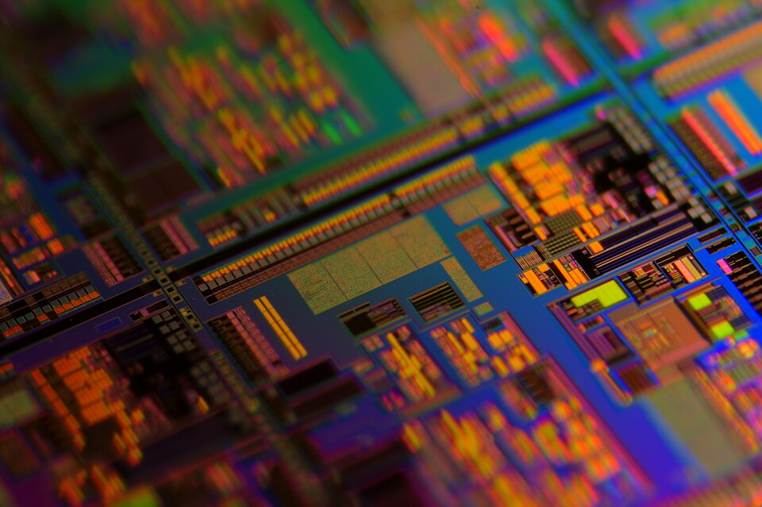

I am currently pursuing my bachelor's degree in electrical engineering at Iowa State University. Before coming to Iowa State to study electrical engineering, I worked for 6 years as an automotive technician at Holmes Transmission and Auto Repair Inc. in Monticello Iowa.
While working as a technician, I received my associate's degree in automotive technology from Kirkwood Community College in Cedar Rapids, Iowa and achieved ASE L1 - engine performance specialist and L3 - Light hybrid vehicle specialist certifications in addition to ASE master technician certification.
In my electrical engineering studies, I am specializing in mixed-signal IC design. In my free time, I enjoy reading, coding, and working on cars.